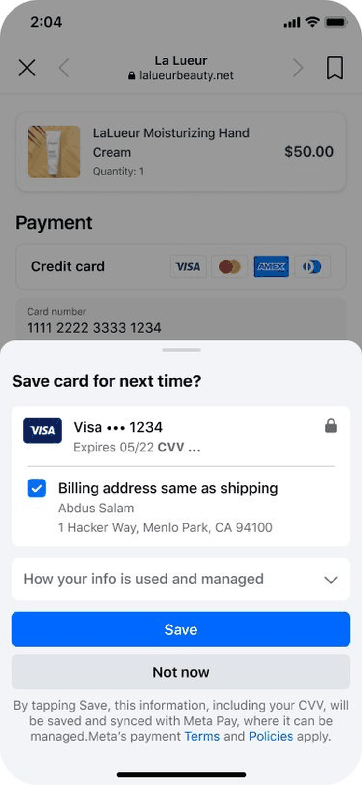
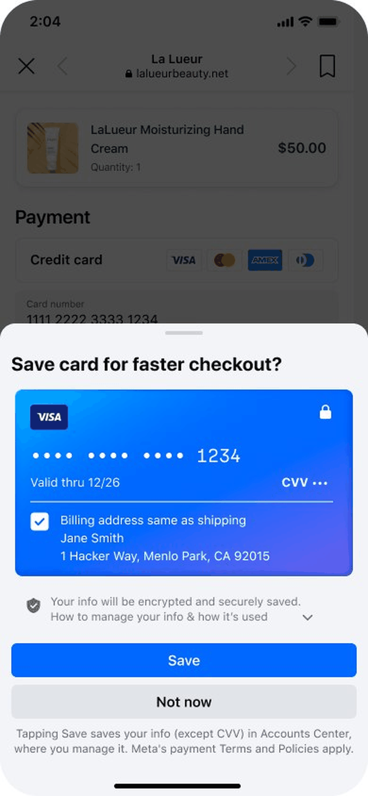
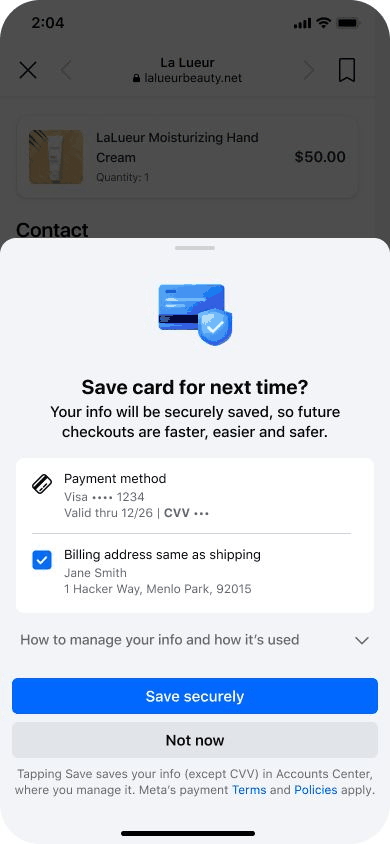
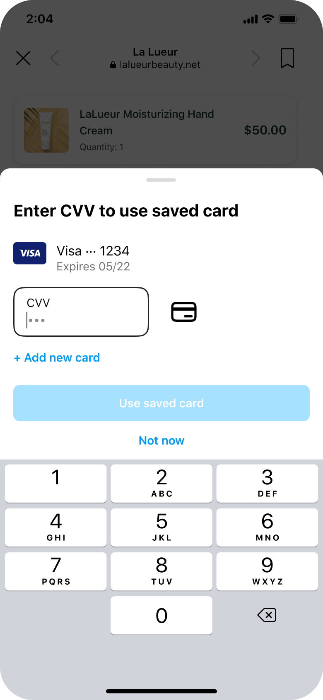

Role
Lead content designerCase Study · Meta Pay Autofill · Content Design
Designing trust into Autofill
A scalable content framework for a regulated payment experience.
Autofill’s save prompts were written for legal compliance. The opportunity was to rewrite them for users — making sensitive payment moments clearer, more security-forward, and easier to scale across variants.
Scope
Save and use flows for Meta Pay Autofill in the in-app browserChallenge
Users did not understand what was saved, who had access, or why they should trust Meta with payment data.Contribution
Created a reusable disclosure framework, rewrote save/use flow content, aligned legal/product/design, and consolidated review across variants.Impact
46% fewer disclosure words. 58% shorter consent disclosure. Approved baseline for future experiments. No early negative regression.The product surface
Autofill saves and reuses payment and contact information across merchant websites in Meta’s in-app browser.
The surface spans four core flows: contact save, contact use, payment save, and payment use. It also varies across platforms, geographies, credential types, and legal/privacy requirements.
What made it hard was not just the number of variants. It was the moment itself: users were mid-checkout, focused on completing a purchase, and being asked to trust Meta with sensitive data for a benefit they could not use until a future visit.
Why this surface was different
Autofill needed trust before it could create convenience.
You’re selling the future
The user did not seek this out. Content had to make a case for a future benefit at the exact moment they were trying to finish something else.
Trust was the blocker
UXR showed 67% of adoption resistance was trust-driven — not utility or friction. Every word either built or eroded trust.
It was regulated
Payment, contact, and address data carry PII, GDPR, and policy obligations. Content errors were not just craft misses; they were compliance risks.
The problem
The existing language was accurate, but not designed to build trust.
Legal and privacy review decisions were spread across more than nine internal documents with no centralized source of truth. The reasoning behind each approved decision was not documented in one place — only the outcomes.
That made meaningful change difficult. You could not propose something clearer without first understanding why the original language had been required. Meanwhile, save prompts led with compliance language, and visible security reassurance was missing entirely.
Research insight
Convenience was not enough. Users needed to know who they were trusting, what would be saved, and how they could stay in control.
Users did not see Meta as a payments brand
That raised the trust bar compared with dedicated payment products.
Users wanted specific security reassurance
Not just shorter copy. They needed to know their information was protected.
Added complexity hurt conversion
The experience needed to get simpler, not more explanatory.
Preferred terminology · N=198
- “CVV” over “security code” clearest label
- “Confirm” over other CTAs 108/198 preferred
- “Autofill” over other feature names 129/198 preferred
- “Encrypted and secure” over other trust messages 95/198 preferred
The content strategy
Four decisions shaped the system.
Lead with security, not speed
Trust was the blocker. Security messaging came first.
Give users agency
“You manage,” not “can be managed.” Control framing over compliance framing.
Fewer words, clearer layers
Reduce cognitive load without losing legal coverage.
Build for reuse
One approved baseline instead of one-off reviews for every experiment.
Content move 1
A scalable disclosure framework
I audited existing guidance and built a single disclosure architecture covering vault/non-vault, US/ROW, and EU/GDPR variants — so future experiments could start from an approved baseline instead of starting over.
What I did
Audited the regulatory reasoning
Reviewed 10+ PXFN resources and 18+ differentiating product experiences to understand not just what had been approved, but why.
Shifted the language strategy
Proposed content changes that moved from compliance-first to user-first while preserving legal and privacy coverage.
Created one reusable architecture
Built a framework that could scale across platforms, geographies, and credential states — reducing review overhead for subsequent work.
Content move 2
Save flow
The save prompt needed to build trust in the moment: clearer value, visible security, shorter disclosures, and stronger user agency.
What changed
Headline
Before
“Save card for next time?”
Neutral question; no clear value prop.
After
“Save card for faster checkout?”
Transactional → value-driven.
Security messaging
Before
Not present
No trust signal at the moment of save.
After
“Your info will be encrypted and securely saved.”
Directly addressed users’ top concern.
Footer disclosure
Before
“By tapping Save, this information, including your CVV, will be saved and synced with Meta Pay, where it can be managed. Meta's payment Terms and Policies apply.”
63 words — passive voice, heavy legal framing.
After
“Tapping Save saves your info (except CVV) in Accounts Center, where you manage it. Meta's payment Terms and Policies apply.”
26 words — active voice, direct. 58% reduction.
Save flow before / after
These exports are pulled from the working deck so the case study can start using real product visuals while we keep refining the final Figma assets.




Impact
fewer words
~140 → ~75 words across the full disclosure
shorter consent text
63 → 26 words in the footer alone
each nested section
Manage, Settings, and Recommendations were all roughly halved
Detailed breakdown
The existing language had three problems: passive where users needed agency, compliance-forward where users needed reassurance, and twice as long as it needed to be.
ElementBeforeAfterThe Thinking
Headline“Save card for next time?”“Save card for faster checkout?”Transactional → value-driven. Users are mid-checkout; give them a reason.
Security messagingNot present“Your info will be encrypted and securely saved.”Trust signal was absent entirely. UXR confirmed this was the highest-performing trust message.
Dropdown label“How your info is used and managed”“How to manage your info & how it's used”“Can be managed” → “you manage.” Agency, not just disclosure.
Manage section17 words7 wordsRepetitive phrasing removed. Same information, clearer hierarchy.
Autofill settings33 words21 wordsOne run-on sentence became two clear sentences.
Recommendations28 words19 wordsConditional phrasing became more direct and declarative.
Footer disclosure63 words26 wordsPassive legal block became active, direct, and legally aligned.
Content move 3
Use flow
The use flow had a different problem: users were not sure what they were confirming or why. The revised flow made the CVV step more explicit and the saved-card action easier to understand.
What changed
Headline
Before
“Confirm card to use autofill?”
Neutral question; did not tell users what they were confirming.
After
“Enter CVV to use saved card”
Clear instruction, optimized from UXR.
CVV field
Before
Empty field
No placeholder or visual cue for expected input.
After
“Enter CVV” with dynamic dots
Informs the user before the keyboard appears.
Call to action
Before
“Confirm”
Vague; did not describe the action.
After
“Use saved card” / “Use card”
Cleaner, action-oriented, and aligned with the task.
Use flow before / after
The after state is a two-step flow: the user recognizes the saved card, enters CVV, then uses the card.
Before

After: instruction

After: two-step flow

Use flow outcome
review cycle
Covered all 4 experiment arms instead of 4 separate reviews
alignment to submission
Verbal alignment 4/14, submitted 4/21, launch target 4/27
A stronger baseline for future experiments
This was not a one-off rewrite.
The work created a reusable disclosure framework across vault/non-vault, US/ROW/EU/GDPR, Android/iOS, and future Autofill variants. It reduced review friction and gave the team an approved baseline to build from.
Early results showed the cleaner language performed at parity with the previous version without introducing drop-off. That matters: the compliance debt was cleared, the experience got simpler, and performance held.
source of truth
Consolidated scattered legal and privacy rationale into one approved framework
fewer words
Same compliance coverage with significantly less cognitive load
early regression
Cleaner language performed at parity — a stronger baseline, not a finish line
What this shows about how I work
I’m strongest in ambiguous, high-stakes surfaces where content has to do more than explain. In this work, content had to build trust, satisfy legal requirements, support experimentation, and scale across product variants without creating new risk.
The no-regression result confirmed what UXR had already signaled: even well-written content cannot fully overcome a structural trust gap. The next lever is bolder — visual hierarchy, fewer decision points, and a UX that integrates instead of interrupts.